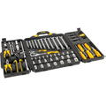

Sobre a Mecanica Arrumacar
Localizada perto da BR 163 entre marechal candido rondon e mercedes a Mecanica Arrumacar traz para o mercado o que há de melhor para o seu carro. Fundada em 2019, a Mecanica Arrumacar já é destaque na cidade e conquista novos clientes a cada dia.
Nossa missão é: "encontrar a melhor peça para resolver os problemas de seu carro".
Oferecemos profissionais experientes e antenados às praticas de mecanismo com carros. O atendimento possui padrão de excelência e agilidade, garantindo qualidade e satisfação dos nossos.
Nosso Estabelecimento
Nosso estabelecimento está localizado entre Marechal C. Rondon e Mercedes
Benefícios
- Atendimento aos Clientes
- Espaço diferenciado
- Localização
- Profissionais Qualificados
- Pontualidade
- Limpeza e Organização